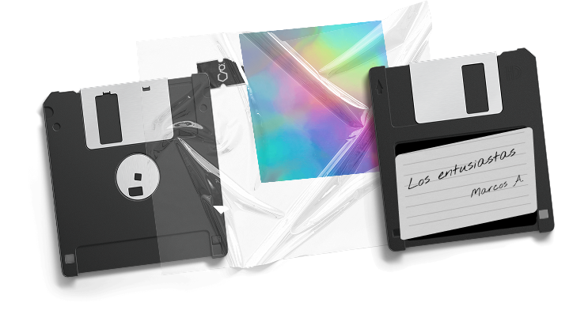

Los entusiastas
El Gato y La Caja
Tres ensayos sonoros para explorar las zonas donde las sustancias y el mundo real se articulan y se afectan mutuamente.
Explora nuestras series de podcasts sobre ciencia, cultura y ficción.
El Gato y La Caja
Tres ensayos sonoros para explorar las zonas donde las sustancias y el mundo real se articulan y se afectan mutuamente.
El Gato y La Caja
Un podcast de conversaciones sobre un mundo en transición. Para entender estos territorios, hay que caminarlos.

El Gato y La Caja + Posta
쮺칩mo podemos ser tantos y, a la vez, sentirnos tan especiales? Vamos a intentar explorar esa pregunta como lo hacían nuestros antepasados: contándonos historias.

El Gato y La Caja + ABRE
Un proyecto abierto y colaborativo: un intento por abarcar el universo y contarlo entero, pero de a pedacitos.
El Gato y La Caja + Posta
Un podcast de ficción en tres capítulos, para que conozcas la historia antes de la historia. Otra producción de El Gato y la Caja junto a Posta.

El Gato y La Caja + Posta
Un podcast breve y actualizado sobre la pandemia, de la mano de un experto en el tema, el biólogo Juan Manuel Carballeda.